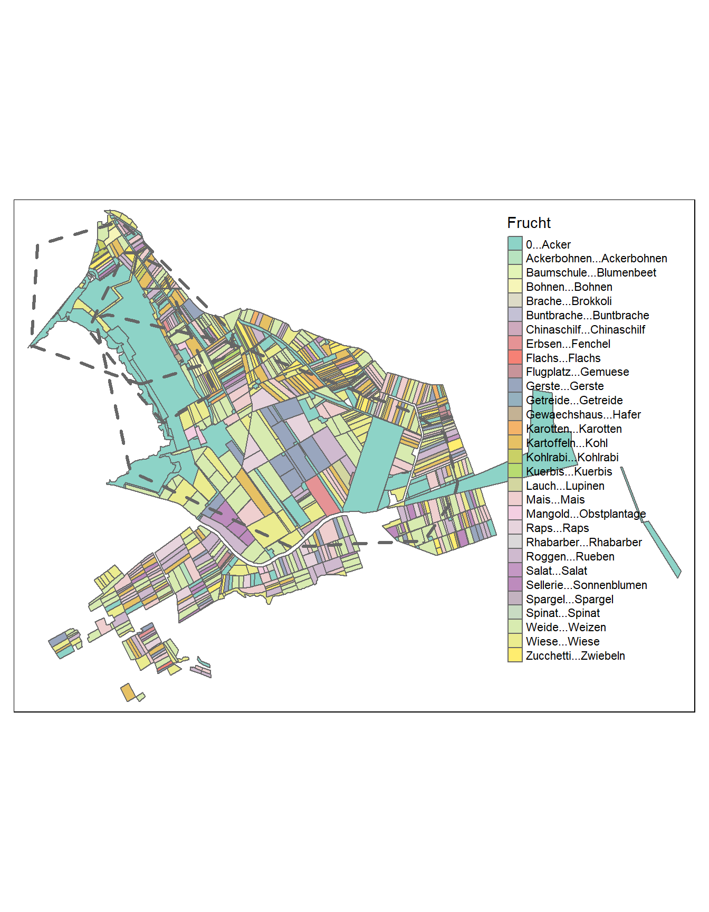

Tasks
Tasks 1: Import and visualize spatial data
- Import the vector dataset
Feldaufnahmen_Fanel_2016.shpfrom moodle withread_sf()and save it to the variablefanel2016. The file .shp stands for Shapefile, which is a simple format for spatial vector data (points, lines, or polygons). This shapefile contains vector data about cultivated crops in the study area. - Transform the coordinates to
CH1903+ LV95. - Filter the dataset
wildschwein_BEto the months May, June and July of 2016 and store the data in a new variable (wildschwein_BE_2015). - Create a minimum convex polygon for each individual in
wildschwein_BE_2015and store it in a new variable (mcp2015) - Create a map with the layers
fanel2016andmcp2015.
## [1] "2015-07-27 11:00:14 UTC"
Task 2: Annotate Trajectories from vector data
Now we would like to know what crop was most visited by our wild boar, and at what time. To this end, use st_join() to attach the attributes from fanel2016 to your trajectory data wildschwein_BE (semantic annotation). Visualize the number of sample points in each category of Frucht over the course of the filtered time period.
Figure 12: The number of samples per category per week from May to July 2015.
Task 3: Explore annotated trajectories
Think of other ways you could visually explore the spatio-temporal patterns of wild boar in relation to the crops.
Ideas:
- For example, in the visualisation above, we did not account for the different availability of the different crops. Potatoes (“Kartoffeln”) are seemingly not visited at all, while rapeseed (“Raps”) has high visitation from May to June. Maybe this is due to the fact that there are mostly rapeseed fields and basically no potatoe fields. How could you consider availability in the visulisation?
- Exlpore the circadian rhythm / daily patterns of crop visitations.
Task 4: Annotate Trajectories from raster data
In terms of raster data, we have prepared the Vegetation Height Model provided by the Swiss National Forrest Inventory (NFI). This dataset contains high resolution information (1x1 Meter) on the vegetation height, which is determined from the difference between the digital surface models DSM and the digital terrain model by swisstopo (swissAlti3D). Buildings are eliminated using a combination of the ground areas of the swisstopo topographic landscape model (TLM) and spectral information from the stereo aerial photos.
Figure 13: An example of a temporal exploration of the data obtained from the nDSM.